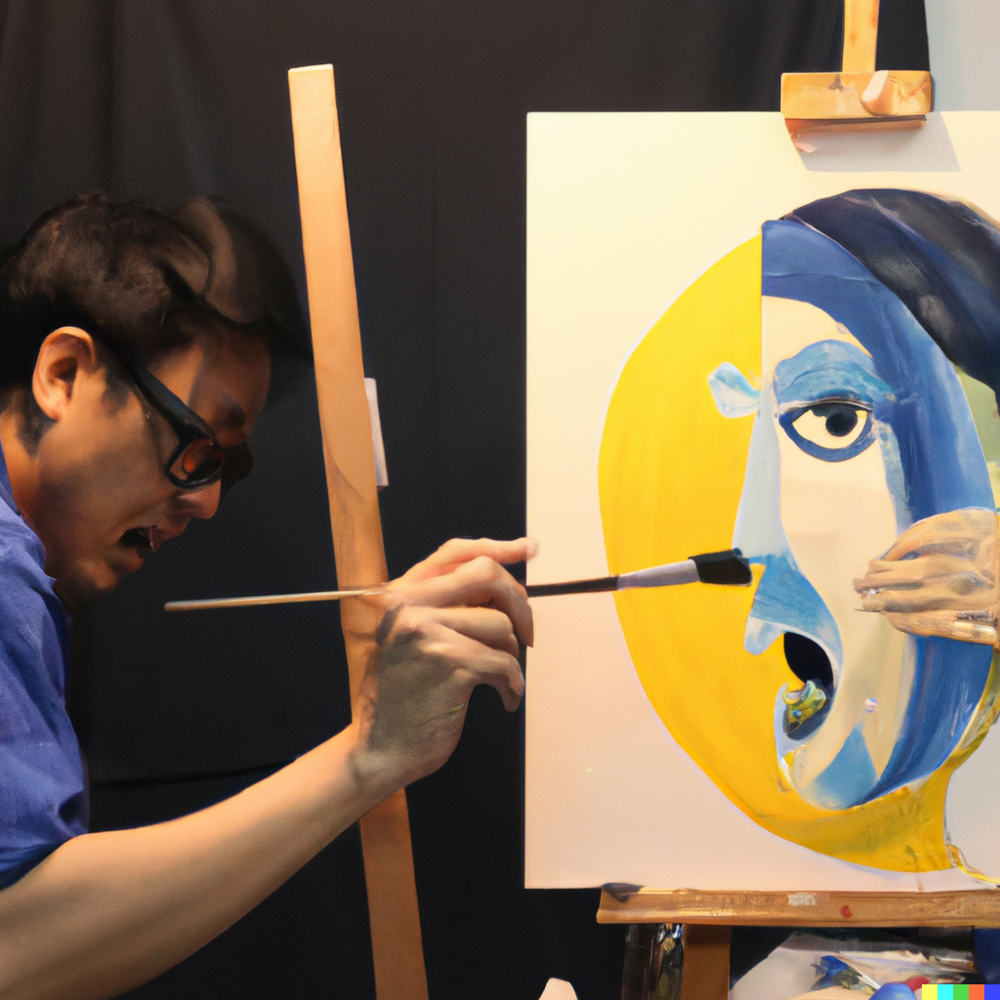

Originality

In the early stages of our careers as designers, it is quite natural for us to begin with imitation. This approach helps us learn the basics and understand various design principles, styles, and techniques that have been successful in the past. It provides a solid foundation for our future growth and development as designers. The reason for this phenomenon is simple: imitation offers an accessible starting point, allowing us to build our skills and gain confidence before venturing into more uncharted territory.
However, an overreliance on imitation can have negative consequences. As we continue to replicate the works of others, our unique perspectives and creative potential may gradually fade away. Imitation, when practiced excessively, can stifle our growth and hinder our ability to think independently and innovatively. Our designs may become formulaic and lack the originality that sets us apart from our peers.
To avoid these pitfalls, it is crucial to strike a balance between imitation and originality. As we progress in our careers, we should make a conscious effort to cultivate our unique style and explore new ideas, pushing the boundaries of what is possible in design. This may involve experimenting with different color palettes, typography, or design concepts that challenge the status quo.
Additionally, seeking inspiration from a variety of sources can help us break away from the cycle of imitation. This can include exploring other creative fields, such as art, architecture, or photography, to broaden our horizons and ignite our creativity.
In conclusion, while imitation is a natural starting point for designers, it is important to recognize its limitations. By focusing on developing our unique voice and pursuing original ideas, we can create more impactful designs that stand out from the crowd and make a lasting impression. It is through this process of continuous growth and self-discovery that we can truly unlock our potential as designers and contribute to the ever-evolving world of design.